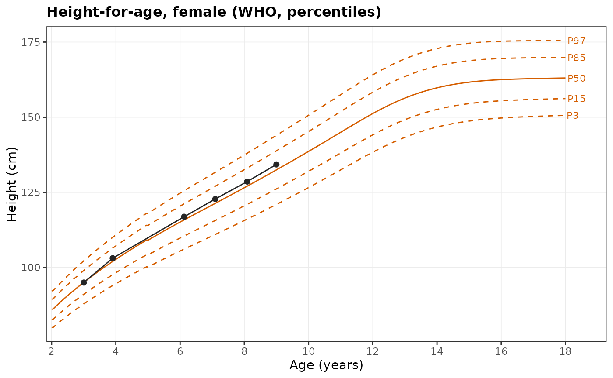
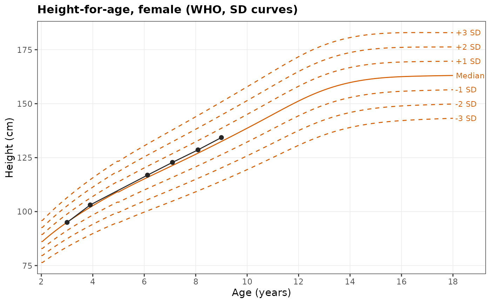
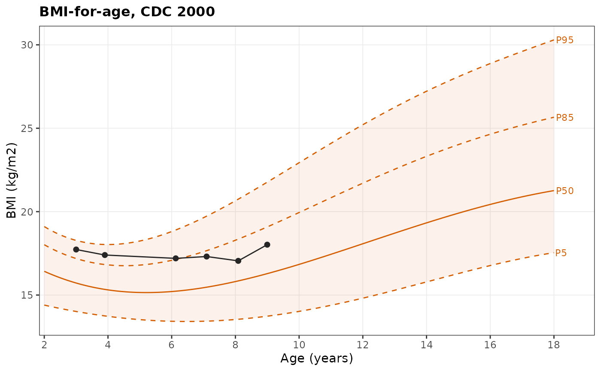
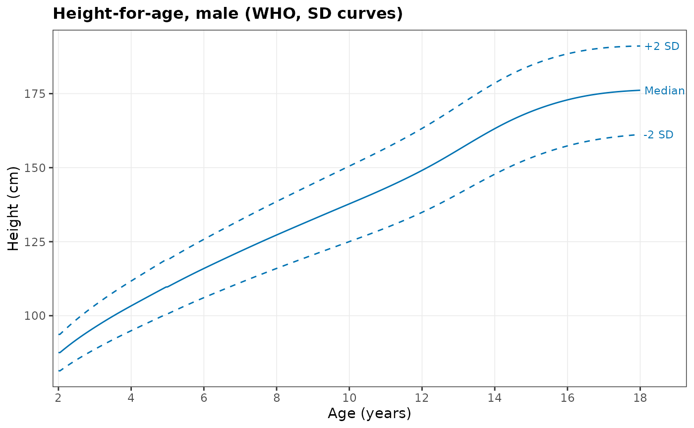

Growth chart with reference curves and a child's measurements
Source:R/desc-plots.R
wgh_plot_growth_chart.RdDraws reference curves for one sex and indicator, either as percentile
curves (3rd, 15th, 50th, 85th and 97th by default) or as standard
deviation (z-score) curves (-3 to +3 SD by default), and overlays the
measurements of one or more children. The reference can be the WHO
standards and reference (default), the CDC 2000 growth charts, or your
own LMS table. Generalises plot_growth_chart() from Book 1 Chapter 5.
Arguments
- x
Data with
id(orpid),age,sexand the measurement.- ids
Children to plot. When
NULL, only the reference is drawn.- indicator
"hfa"(height),"wfa"(weight) or"bfa"(BMI).- sex
Sex of the chart (taken from the first child when
NULL).- lines
"percentile"or"sd".- centiles
Percentiles to draw when
lines = "percentile".- sd_lines
Z-scores to draw when
lines = "sd".- reference
"who","cdc"or a custom LMS table (seewgh_reference()).- age_range
Age range in years (default 2 to 18).
- band
Shade the area between the outermost curves.
- label_lines
Label each curve at its right end.
- line_colour
Colour of the reference curves (default by sex).
- child_colour
Colour of the child's measurements. With several children, use
NULLto colour each child differently.- ...
Display options (see
wgh_plot_options()), for exampletitle,base_sizeory_limits.
Next steps
Read a child's z-scores with wgh_add_zscores(), compare references with
wgh_compare_references(), or build a personalised expected range with
wgh_condref() and wgh_plot_fan().
Examples
girl <- growdat$pid[growdat$sex == "Female"][1]
# WHO percentiles (default)
wgh_plot_growth_chart(growdat, ids = girl)

# WHO standard deviation curves
wgh_plot_growth_chart(growdat, ids = girl, lines = "sd")

# CDC 2000 percentiles for BMI, with a shaded band and a custom title
wgh_plot_growth_chart(growdat, ids = girl, indicator = "bfa", reference = "cdc",
centiles = c(5, 50, 85, 95), band = TRUE, title = "BMI-for-age, CDC 2000")

# Reference curves only, for boys
wgh_plot_growth_chart(sex = "Male", lines = "sd", sd_lines = c(-2, 0, 2))
